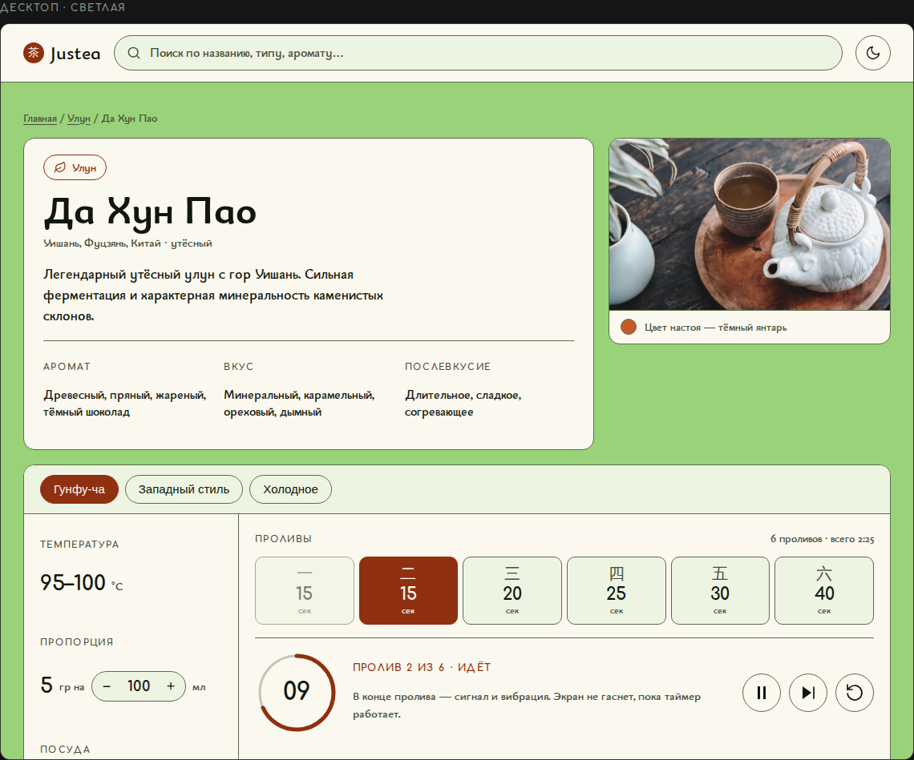
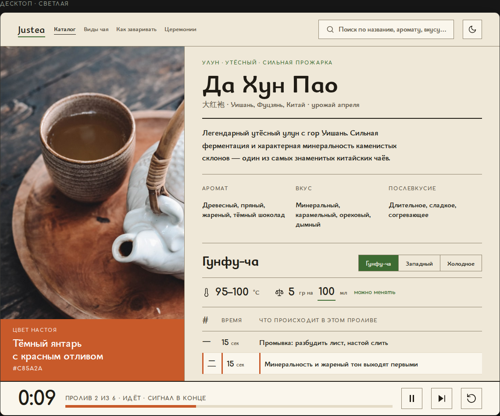
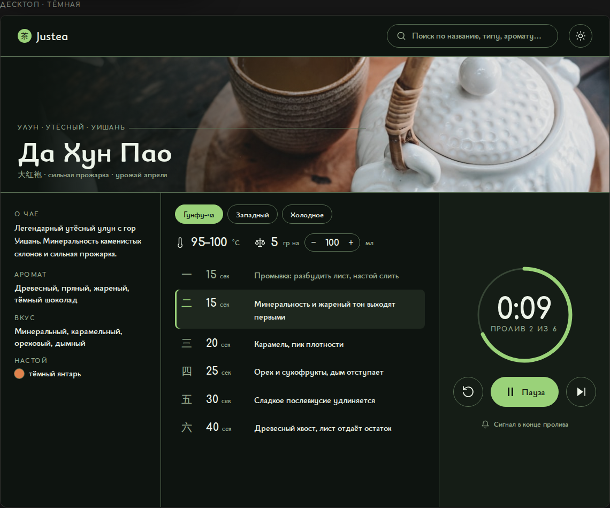

Justea · дизайн
Основание — UX/UI-аудит. Все три направления закрывают блокеры из него: фокус, контраст границ, тёмную тему, сигнал таймера, фотографии чая, доступ к завариванию с первого экрана на телефоне. Различаются они характером — насколько далеко сайт уходит от нынешнего облика. Нужно выбрать одно.

A
Фирменный зелёный остаётся фоном страницы, но текст и управление переезжают на тёплую бумагу. Акцент — терракота настоя. Эволюция, а не перезапуск.

B
Фон — бумага сюань, зелёный в акцент, а страницу красит настоящий цвет настоя этого чая. Каталог перестаёт быть однообразным.

C
Тёмный фон, зелёный как свет. На телефоне страница чая — три панели вбок, таймер занимает экран целиком. Развитие эксперимента из sandbox.
| A · Гунфу | B · Чайная бумага | C · Свиток | |
|---|---|---|---|
| Фон светлой темы | зелёный #9AD279 | бумага #EFE8D8 | светло-зелёный #E6ECDD |
| Роль фирменного зелёного | поле страницы | акцент | свет и акцент |
| Основная тема | светлая | светлая | тёмная |
| Чем красится страница чая | одинаково у всех | цветом настоя | одинаково у всех |
| Форма | скругления 10–14 px | прямые углы | капсулы и круги |
| Проливы | ячейки в ряд | строки таблицы с заметками | строки + «чётки» |
| Таймер | панель в приборе | закладка внизу разворота | отдельный экран |
| Мобильная модель | лента + липкая панель | лента + липкая панель | свиток из трёх панелей |
*:focus { outline: none !important }.text-[NNpx].
Во всех макетах стоит одна и та же фотография из public/teas/longjing.jpg
как заглушка — реальная съёмка по сортам нужна отдельно, без неё ни одно
направление не раскроется.